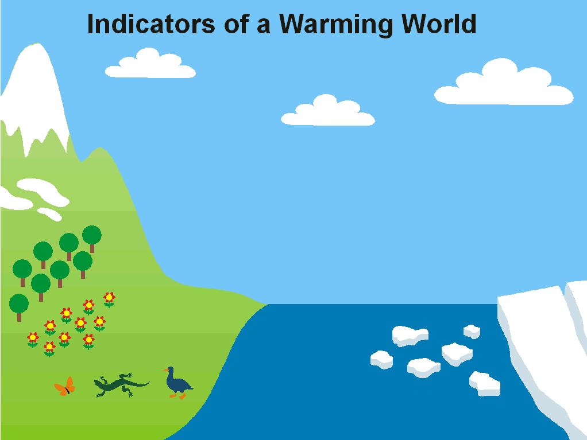
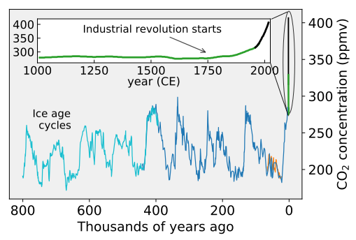
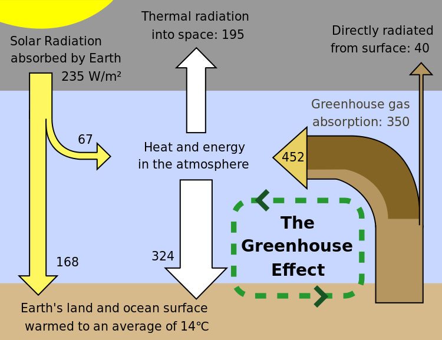
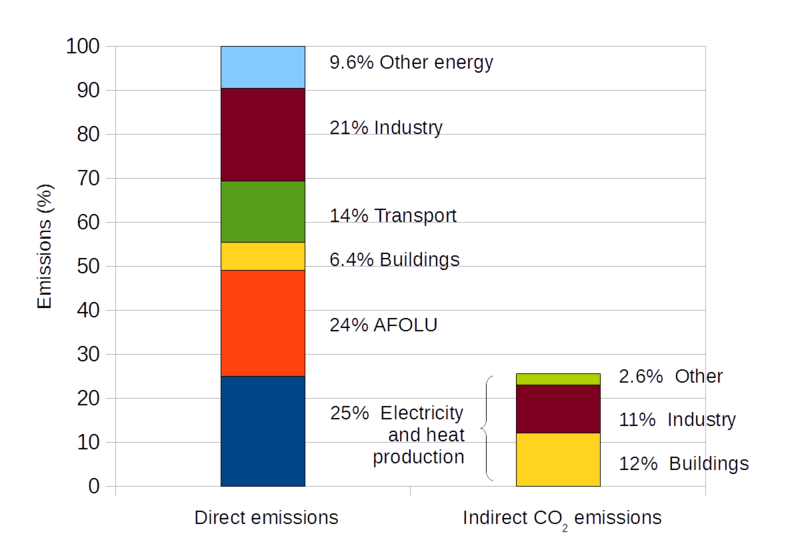
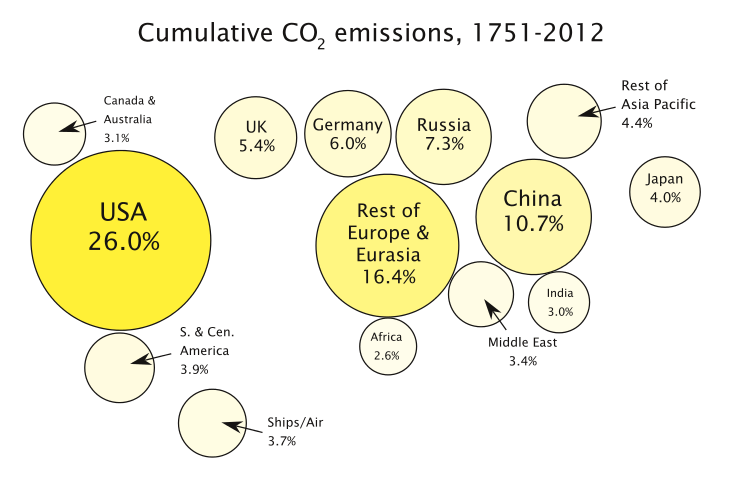
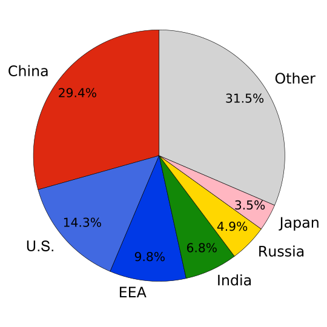
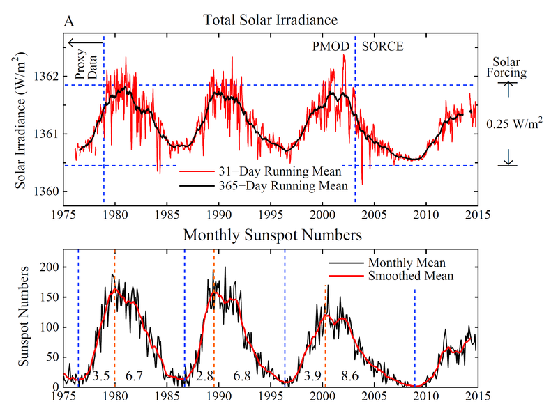
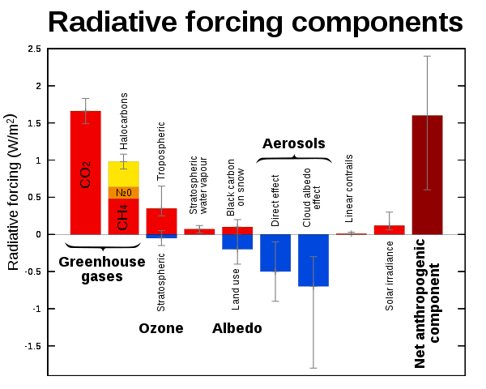

 Initial causes of temperature changes (external forcings)
 By itself, the climate system may generate random changes in global temperatures for years to decades at a time, but long-term changes emanate only from so-called external forcings.These forcings are "external" to the climate system, but not necessarily external to Earth. Examples of external forcings include changes in the composition of the atmosphere (e.g., increased concentrations of greenhouse gases), solar luminosity, volcanic eruptions, and variations in Earth's orbit around the Sun.
Greenhouse gases
The greenhouse effect is the process by which absorption and emission of infrared radiation by gases in a planet's atmosphere warm its lower atmosphere and surface. It was proposed by Joseph Fourier in 1824, discovered in 1860 by John Tyndall,was first investigated quantitatively by Svante Arrhenius in 1896,and the hypothesis was reported in the popular press as early as 1912.The scientific description of global warming was further developed in the 1930s through 1960s by Guy Stewart Callendar.
  On Earth, an atmosphere containing naturally occurring amounts of greenhouse gases causes air temperature near the surface to be warmer by about 33 °C (59 °F) than it would be in their absence.Without the Earth's atmosphere, the Earth's average temperature would be well below the freezing temperature of water.The major greenhouse gases are water vapour, which causes about 36–70% of the greenhouse effect; carbon dioxide (CO2), which causes 9–26%; methane (CH4), which causes 4–9%; and ozone (O3), which causes 3–7%.
 Human activity since the Industrial Revolution has increased the amount of greenhouse gases in the atmosphere, leading to increased radiative forcing from CO2, methane, tropospheric ozone, CFCs, and nitrous oxide. According to work published in 2007, the concentrations of CO2 and methane had increased by 36% and 148% respectively since 1750.These levels are much higher than at any time during the last 800,000 years, the period for which reliable data has been extracted from ice cores. Less direct geological evidence indicates that CO2 values higher than this were last seen about 20 million years ago.
Fossil fuel burning has produced about three-quarters of the increase in CO2 from human activity over the past 20 years. The rest of this increase is caused mostly by changes in land-use, particularly deforestation. Another significant non-fuel source of anthropogenic CO2 emissions is the calcination of limestone for clinker production, a chemical process which releases CO2. Estimates of global CO2 emissions in 2011 from fossil fuel combustion, including cement production and gas flaring, was 34.8 billion tonnes (9.5 ± 0.5 PgC), an increase of 54% above emissions in 1990. Coal burning was responsible for 43% of the total emissions, oil 34%, gas 18%, cement 4.9% and gas flaring 0.7%.
In May 2013, it was reported that readings for CO2 taken at the world's primary benchmark site in Mauna Loa surpassed 400 ppm. According to professor Brian Hoskins, this is likely the first time CO2 levels have been this high for about 4.5 million years. Monthly global CO2 concentrations exceeded 400 ppm in March 2015, probably for the first time in several million years. On 12 November 2015, NASA scientists reported that human-made carbon dioxide continues to increase above levels not seen in hundreds of thousands of years; currently, about half of the carbon dioxide released from the burning of fossil fuels is not absorbed by vegetation and the oceans and remains in the atmosphere.
 Over the last three decades of the twentieth century, gross domestic product per capita and population growth were the main drivers of increases in greenhouse gas emissions.CO2 emissions are continuing to rise due to the burning of fossil fuels and land-use change. Emissions can be attributed to different regions. Attributions of emissions due to land-use change are subject to considerable uncertainty.
Emissions scenarios, estimates of changes in future emission levels of greenhouse gases, have been projected that depend upon uncertain economic, sociological, technological, and natural developments.In most scenarios, emissions continue to rise over the century, while in a few, emissions are reduced.Fossil fuel reserves are abundant, and will not limit carbon emissions in the 21st century. Emission scenarios, combined with modelling of the carbon cycle, have been used to produce estimates of how atmospheric concentrations of greenhouse gases might change in the future. Using the six IPCC SRES "marker" scenarios, models suggest that by the year 2100, the atmospheric concentration of CO2 could range between 541 and 970 ppm.
Aerosols and soot
Global dimming, a gradual reduction in the amount of global direct irradiance at the Earth's surface, was observed from 1961 until at least 1990. Solid and liquid particles known as aerosols, produced by volcanoes and human-made pollutants, are thought to be the main cause of this dimming. They exert a cooling effect by increasing the reflection of incoming sunlight. The effects of the products of fossil fuel combustion – CO2 and aerosols – have partially offset one another in recent decades, so that net warming has been due to the increase in non-CO2 greenhouse gases such as methane.Radiative forcing due to aerosols is temporally limited due to the processes that remove aerosols from the atmosphere. Removal by clouds and precipitation gives tropospheric aerosols an atmospheric lifetime of only about a week, while stratospheric aerosols can remain for a few years. Carbon dioxide has a lifetime of a century or more, and as such, changes in aerosols will only delay climate changes due to carbon dioxide. Black carbon is second only to carbon dioxide for its contribution to global warming (contribution being estimated at 17 to 20%, whereas carbon dioxide contributes 40 to 45% to global warming.
 In addition to their direct effect by scattering and absorbing solar radiation, aerosols have indirect effects on the Earth's radiation budget. Sulfate aerosols act as cloud condensation nuclei and thus lead to clouds that have more and smaller cloud droplets. These clouds reflect solar radiation more efficiently than clouds with fewer and larger droplets, a phenomenon known as the Twomey effect.This effect also causes droplets to be of more uniform size, which reduces growth of raindrops and makes the cloud more reflective to incoming sunlight, known as the Albrecht effect. Indirect effects are most noticeable in marine stratiform clouds, and have very little radiative effect on convective clouds. Indirect effects of aerosols represent the largest uncertainty in radiative forcing.
In addition to their direct effect by scattering and absorbing solar radiation, aerosols have indirect effects on the Earth's radiation budget. Sulfate aerosols act as cloud condensation nuclei and thus lead to clouds that have more and smaller cloud droplets. These clouds reflect solar radiation more efficiently than clouds with fewer and larger droplets, a phenomenon known as the Twomey effect.This effect also causes droplets to be of more uniform size, which reduces growth of raindrops and makes the cloud more reflective to incoming sunlight, known as the Albrecht effect. Indirect effects are most noticeable in marine stratiform clouds, and have very little radiative effect on convective clouds. Indirect effects of aerosols represent the largest uncertainty in radiative forcing.
Soot may either cool or warm Earth's climate system, depending on whether it is airborne or deposited. Atmospheric soot directly absorbs solar radiation, which heats the atmosphere and cools the surface. In isolated areas with high soot production, such as rural India, as much as 50% of surface warming due to greenhouse gases may be masked by atmospheric brown clouds.When deposited, especially on glaciers or on ice in arctic regions, the lower surface albedo can also directly heat the surface. The influences of atmospheric particles, including black carbon, are most pronounced in the tropics and sub-tropics, particularly in Asia, while the effects of greenhouse gases are dominant in the extratropics and southern hemisphere.
Solar activity
Since 1978, solar irradiance has been measured by satellites.
 Climate models have been used to examine the role of the Sun in recent climate change. Models are unable to reproduce the rapid warming observed in recent decades when only taking into account variations in solar output and volcanic activity.
Another line of evidence for the Sun's non-attributability is the differing temperature changes at different levels in the Earth's atmosphere.According to basic physical principles, the greenhouse effect produces warming of the lower atmosphere (the troposphere), but cooling of the upper atmosphere (the stratosphere). If solar variations were responsible for the observed warming, warming of both the troposphere and the stratosphere would be expected.
Variations in Earth's orbit
 The tilt of the Earth’s axis and the shape of its orbit around the Sun vary slowly over tens of thousands of years. This changes climate by changing the seasonal and latitudinal distribution of incoming solar energy at Earth's surface. During the last few thousand years, this phenomenon contributed to a slow cooling trend at high latitudes of the Northern Hemisphere during summer, a trend that was reversed by greenhouse-gas-induced warming during the 20th century. Orbital cycles favorable for glaciation are not expected within the next 50,000 years.